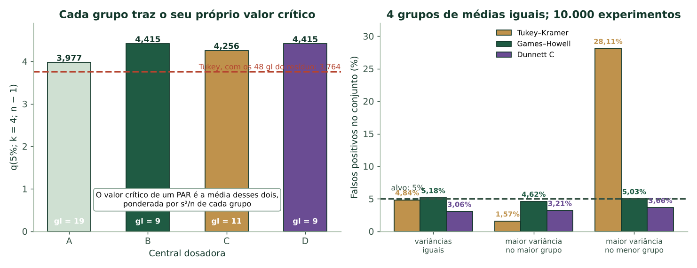
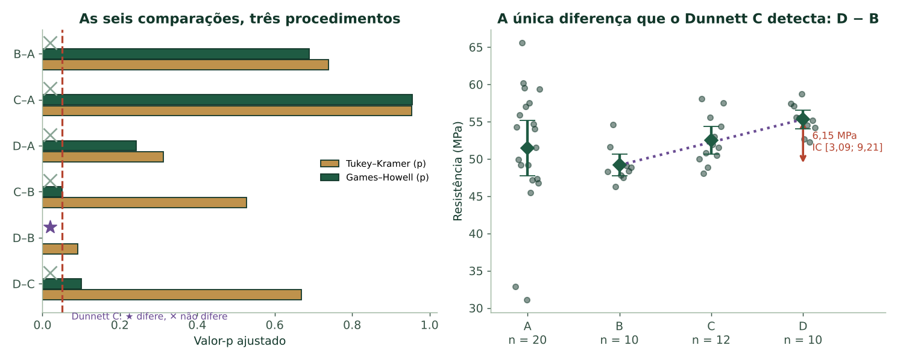

Dunnett C
Compara todas as médias duas a duas com variâncias desiguais, combinando os valores críticos dos dois grupos de cada par.
Comece por aqui
Quando as variâncias dos grupos diferem, o procedimento de Tukey deixa de valer e é preciso escolher entre as alternativas. O Games–Howell estima graus de liberdade para cada par e mantém a taxa de erro bem perto do nominal. O Dunnett C faz uma escolha diferente: em vez de estimar graus de liberdade, ele combina os valores críticos dos dois grupos envolvidos, de uma forma que garante o controle da taxa de erro sem depender de aproximação.
Games–Howell pergunta "quantos graus de liberdade esta combinação de variâncias vale?" e usa a resposta. Dunnett C pergunta "qual seria o valor crítico se eu usasse só o grupo i? e só o grupo j?" e toma a média dos dois, ponderada pela contribuição de cada um ao erro-padrão.
O que é o procedimento
Para cada par, o erro-padrão é o mesmo do Games–Howell: construído com as variâncias dos dois grupos envolvidos. O que muda é o valor crítico. Em vez de calcular graus de liberdade por Welch–Satterthwaite, o Dunnett C toma o quantil da amplitude estudentizada com \(n_i-1\) graus de liberdade e o quantil com \(n_j-1\), e faz a média ponderada pelos pesos \(s_i^2/n_i\) e \(s_j^2/n_j\).

O Dunnett C controla a taxa de erro em todos os cenários, mas com folga: ele gasta cerca de 3,5% dos 5% disponíveis. Essa folga é o preço de não depender de uma aproximação. Quando o objetivo é uma garantia de controle, e não um nível exato, a troca é defensável; quando o objetivo é detectar diferenças reais, o Games–Howell é mais sensível.
Pressupostos e como verificá-los
| Pressuposto | Por que importa | Como verificar |
|---|---|---|
| Observações independentes | Indispensável. | Delineamento. |
| Normalidade dentro de cada grupo | Sustenta a amplitude estudentizada de cada grupo. | by(y, g, shapiro.test); não use os resíduos agrupados. |
| Variâncias homogêneas | Não é exigida: é o que se dispensa. | Verifique mesmo assim, para justificar a escolha. |
| Pelo menos cerca de 6 observações por grupo | Cada grupo precisa de graus de liberdade próprios. | Conte as observações. |
| Ausência de valores extremos dominantes | As variâncias amostrais ficam instáveis. | Boxplots por grupo. |
Como no Games–Howell, o teste global que acompanha o Dunnett C é a ANOVA de Welch, não a clássica. No exemplo desta ficha a ANOVA clássica nem rejeita (p = 0,123), enquanto a de Welch rejeita com folga (p = 2,9 × 10⁻⁵).
Hipóteses e estatística de teste
Em que:
- \(k\)
- número de grupos, que entra no quantil de cada parcela
- \(s_i^2,\ n_i\)
- variância e tamanho do grupo i
- \(q_{\alpha;k,n_i-1}\)
- quantil da amplitude estudentizada com os graus de liberdade do grupo i
- \(c_{ij}\)
- valor crítico do par, média ponderada dos dois quantis
Exemplo numérico, passo a passo
| Central | n | Média (MPa) | Variância | s²/n | q(5%; 4; n−1) |
|---|---|---|---|---|---|
| A | 20 | 51,435 | 72,644 | 3,632 | 3,9766 |
| B | 10 | 49,170 | 5,525 | 0,552 | 4,4149 |
| C | 12 | 52,525 | 10,604 | 0,884 | 4,2561 |
| D | 10 | 55,320 | 4,106 | 0,411 | 4,4149 |
Os pesos são \(s_B^2/n_B=0{,}552\) e \(s_D^2/n_D=0{,}411\). Como as duas centrais têm \(n=10\), os dois quantis coincidem em 4,4149, e a média ponderada devolve o mesmo valor:
O intervalo é \[\begin{aligned}&6{,}150\pm4{,}4149\times0{,}694 \\ &= [+3{,}086;\ +9{,}214]\end{aligned}\] MPa: a diferença é declarada significativa.
Agora \(s_A^2/n_A=3{,}632\) e \(s_D^2/n_D=0{,}411\): a central A, muito mais dispersa, domina o erro-padrão e puxa o valor crítico para o seu próprio quantil.
mais próximo de 3,977 (o de A) do que de 4,415 (o de D). O \(q\) observado é 2,733, abaixo do crítico, e o par não é declarado diferente.
Propriedades
- Controla a taxa de erro do conjunto de forma conservadora, sem depender de aproximação para os graus de liberdade.
- Com variâncias iguais e grupos balanceados, reduz-se ao Tukey.
- O valor crítico de um par fica sempre entre \(q_{\alpha;k,n_i-1}\) e \(q_{\alpha;k,n_j-1}\).
- É mais conservador que o Games–Howell em todos os cenários simulados nesta ficha.
- Fornece intervalos de confiança, não apenas decisões.
- O procedimento Dunnett T3, do mesmo autor, usa o módulo máximo estudentizado com graus de liberdade de Welch e é indicado para grupos pequenos.
Como interpretar os resultados
| Elemento | O que informa | Cuidado |
|---|---|---|
| q observado | Diferença dividida pelo erro-padrão do par. | Mesma escala do Tukey. |
| Valor crítico do par | Média ponderada dos dois quantis. | Varia de par para par. |
| Decisão | Comparação direta entre os dois. | Não há valor-p fechado simples. |
| IC | Intervalo de 95% para o par. | Largura varia conforme as variâncias. |
| Comparação com Games–Howell | Revela o custo do conservadorismo. | Vale apresentar os dois. |
O Dunnett C é formulado como uma regra de decisão com valor crítico, e não como um valor-p. Pode-se obter um valor-p aproximado invertendo a regra — procurando o \(\alpha\) que torna \(c_{ij}\) igual ao \(q\) observado —, mas isso exige resolver numericamente e não é o uso padrão. Reporte a decisão e o intervalo de confiança.
Como executar no R e em Python
Onde executar o código em Python
Não é preciso instalar nada: o Google Colab é um computador na nuvem, gratuito, que executa Python pelo navegador e já traz as bibliotecas usadas aqui (numpy, scipy e matplotlib).
Não há função no R base nem nos pacotes de comparações múltiplas mais usados. A implementação é curta: qtukey(), do pacote stats, fornece os quantis com os graus de liberdade de cada grupo, e a média ponderada é uma linha de código, como no bloco acima. No SPSS o procedimento aparece na lista de post hoc para variâncias desiguais, ao lado de Tamhane T2, Dunnett T3 e Games–Howell. Para o teste global, oneway.test() com var.equal = FALSE.
q_ind <- sapply(n, function(ni) qtukey(1 - 0.05, k, ni - 1))
qc <- (q_ind[i] * si + q_ind[j] * sj) / (si + sj) # si = s2[i]/n[i]
Exemplo de aplicação
Contexto dos dados
Os dados do exemplo são fictícios e foram criados pelo autor. São os corpos de prova de concreto de quatro centrais dosadoras, o mesmo conjunto das fichas da ANOVA de Welch e do Games–Howell. A central A tem variância 17,7 vezes maior que a da D, o que torna o Tukey inadequado e põe os três procedimentos para variâncias desiguais em concorrência direta.
Código em R
# Dunnett C: exemplo completo ----
# Pacotes: stats (base). O SPSS traz o Dunnett C pronto; no R, a conta é curta.
# Para comparar: rstatix (Games-Howell), PMCMRplus, car
# install.packages(c("rstatix", "car"))
# 1. Dados fictícios: resistência à compressão (MPa) de corpos de prova de concreto
# de quatro centrais dosadoras. É o conjunto das fichas da ANOVA de Welch e de
# Games-Howell.
resistencia <- c(57.0,54.0,51.5,31.1,55.9,32.9,60.2,57.5,59.5,59.4,
54.7,47.2,49.2,65.6,46.8,49.9,45.5,47.3,49.2,54.3,
48.4,48.3,47.8,49.2,46.3,49.1,51.6,47.5,48.9,54.6,
50.5,48.9,51.9,57.5,58.1,50.0,54.4,53.0,51.5,48.1,55.6,50.8,
55.6,55.2,58.7,57.4,52.7,54.5,57.1,52.3,54.2,55.5)
central <- factor(rep(c("A", "B", "C", "D"), times = c(20, 10, 12, 10)))
dados <- data.frame(central, resistencia)
aggregate(resistencia ~ central, data = dados,
FUN = function(x) c(n = length(x), media = mean(x), var = var(x)))
# 2. O pressuposto que justifica o procedimento
library(car)
leveneTest(resistencia ~ central, data = dados, center = median)
v <- tapply(dados$resistencia, dados$central, var); max(v) / min(v)
# 3. O teste global compatível: ANOVA de Welch
oneway.test(resistencia ~ central, data = dados, var.equal = FALSE)
# 4. Dunnett C, implementado diretamente
alfa <- 0.05
m <- tapply(dados$resistencia, dados$central, mean)
s2 <- tapply(dados$resistencia, dados$central, var)
n <- table(dados$central)
k <- nlevels(dados$central)
q_ind <- sapply(n, function(ni) qtukey(1 - alfa, k, ni - 1)) # q(k, n_i - 1)
q_ind
pares <- combn(levels(dados$central), 2)
resultado <- t(apply(pares, 2, function(p_) {
i <- p_[1]; j <- p_[2]
si <- s2[i]/n[i]; sj <- s2[j]/n[j]
dif <- m[j] - m[i]
ep <- sqrt((si + sj) / 2) # erro-padrão na escala de q
qc <- (q_ind[i] * si + q_ind[j] * sj) / (si + sj) # valor crítico PONDERADO
c(diferenca = dif, ep = ep, q_obs = abs(dif)/ep, q_critico = qc,
inferior = dif - qc * ep, superior = dif + qc * ep,
difere = as.numeric(abs(dif)/ep > qc))
}))
rownames(resultado) <- apply(pares, 2, paste, collapse = " - ")
round(resultado, 4)
# 5. Para comparar: Games-Howell e Tukey-Kramer
library(rstatix)
games_howell_test(dados, resistencia ~ central)
TukeyHSD(aov(resistencia ~ central, data = dados))
# 6. Por que o valor crítico é uma média ponderada
# Quando as duas variâncias são iguais, qc é a média simples de q(k, n_i-1) e
# q(k, n_j-1). Quando uma delas domina, qc tende ao q daquele grupo:
si <- s2["A"]/n["A"]; sj <- s2["D"]/n["D"]
c(peso_A = si/(si+sj), peso_D = sj/(si+sj),
q_A = q_ind["A"], q_D = q_ind["D"],
q_ponderado = (q_ind["A"]*si + q_ind["D"]*sj)/(si+sj))
# 7. Gráfico: as médias com o intervalo de cada grupo
eps <- sqrt(s2 / n)
plot(1:k, m, ylim = c(44, 60), pch = 18, cex = 2, xaxt = "n",
xlab = "Central dosadora", ylab = "Resistência (MPa)")
axis(1, at = 1:k, labels = levels(dados$central))
arrows(1:k, m - 1.96*eps, 1:k, m + 1.96*eps, angle = 90, code = 3, length = 0.08)
A mesma análise em Python, com os resultados
Cole o código em um notebook do Google Colab ↗ e execute com Shift+Enter. Os valores abaixo são a saída desse código.
# Bibliotecas: numpy, scipy e matplotlib (já instaladas no Google Colab)
import numpy as np
from scipy import stats
import itertools
alfa = 0.05
# Dados fictícios: resistência à compressão (MPa) de corpos de prova de concreto
# de quatro centrais dosadoras. É o conjunto das fichas da ANOVA de Welch e de
# Games-Howell, usado aqui para comparar os dois procedimentos diretamente.
A = np.array([57.0,54.0,51.5,31.1,55.9,32.9,60.2,57.5,59.5,59.4,54.7,47.2,49.2,65.6,46.8,49.9,45.5,47.3,49.2,54.3])
B = np.array([48.4,48.3,47.8,49.2,46.3,49.1,51.6,47.5,48.9,54.6])
C = np.array([50.5,48.9,51.9,57.5,58.1,50.0,54.4,53.0,51.5,48.1,55.6,50.8])
D = np.array([55.6,55.2,58.7,57.4,52.7,54.5,57.1,52.3,54.2,55.5])
gs = [A, B, C, D]; nomes = ["A", "B", "C", "D"]
k = len(gs); ns = np.array([len(g) for g in gs], float); N = int(ns.sum())
medias = np.array([g.mean() for g in gs]); vars_ = np.array([g.var(ddof=1) for g in gs])
QM = np.sum((ns - 1) * vars_) / (N - k); gl = N - k
print("central n média DP variância s²/n")
for i in range(k):
print(f" {nomes[i]} {int(ns[i]):2d} {medias[i]:6.3f} {np.sqrt(vars_[i]):5.3f} "
f"{vars_[i]:8.3f} {vars_[i]/ns[i]:6.3f}")
print(f"Razão entre a maior e a menor variância = {vars_.max()/vars_.min():.2f}")
print(f"Brown-Forsythe: W = {stats.levene(*gs, center='median')[0]:.4f}, "
f"p = {stats.levene(*gs, center='median')[1]:.5f}")
print(f"QM do resíduo agrupado = {QM:.3f} (DP = {np.sqrt(QM):.3f} MPa) | gl = {gl}")
# 1. O teste global compatível
w = ns / vars_; mu_w = np.sum(w*medias)/np.sum(w)
lam = np.sum((1 - w/w.sum())**2/(ns-1))
Fw = (np.sum(w*(medias-mu_w)**2)/(k-1)) / (1 + 2*(k-2)/(k**2-1)*lam)
glw = (k**2-1)/(3*lam)
print(f"\nANOVA de Welch: F({k-1}; {glw:.3f}) = {Fw:.4f}, p = {stats.f.sf(Fw, k-1, glw):.3e}")
print(f"ANOVA clássica: F({k-1}; {gl}) = {stats.f_oneway(*gs)[0]:.4f}, "
f"p = {stats.f_oneway(*gs)[1]:.5f}")
# 2. O valor crítico de Dunnett C: média ponderada de dois valores de q
print("\nDunnett C: o valor crítico de cada par é uma média ponderada")
print("de q(k, n_i - 1) e q(k, n_j - 1), com pesos s_i²/n_i e s_j²/n_j.")
print(f"\nq(5%, k = {k}, gl) para cada central, com gl = n - 1:")
for i in range(k):
print(f" central {nomes[i]} (gl = {int(ns[i]-1)}): q = "
f"{stats.studentized_range.ppf(1-alfa, k, ns[i]-1):.4f}")
def dunnett_c(i, j):
si, sj = vars_[i]/ns[i], vars_[j]/ns[j]
qi = stats.studentized_range.ppf(1-alfa, k, ns[i]-1)
qj = stats.studentized_range.ppf(1-alfa, k, ns[j]-1)
qc = (qi*si + qj*sj) / (si + sj) # valor crítico ponderado
ep = np.sqrt((si + sj)/2) # erro-padrão na escala de q
return medias[j]-medias[i], ep, qc, abs(medias[j]-medias[i])/ep
def games_howell(i, j):
si, sj = vars_[i]/ns[i], vars_[j]/ns[j]
glw_ = (si+sj)**2 / (si**2/(ns[i]-1) + sj**2/(ns[j]-1))
ep = np.sqrt((si+sj)/2)
q = abs(medias[j]-medias[i])/ep
return medias[j]-medias[i], ep, glw_, q, stats.studentized_range.sf(q, k, glw_)
print(f"\nDunnett C ({k*(k-1)//2} comparações)")
print(f"{'par':<8}{'diferença':>11}{'EP':>8}{'q obs.':>9}{'q crítico':>11}{'decisão':>12}{'IC 95%':>22}")
res_dc = []
for i, j in itertools.combinations(range(k), 2):
dif, ep, qc, q = dunnett_c(i, j)
marg = qc*ep
sig = q > qc
res_dc.append((f"{nomes[j]} - {nomes[i]}", dif, ep, q, qc, sig, dif-marg, dif+marg))
print(f"{nomes[j]+' - '+nomes[i]:<8}{dif:11.3f}{ep:8.3f}{q:9.3f}{qc:11.3f}"
f"{(' difere *' if sig else ' não difere'):>12} [{dif-marg:7.3f}; {dif+marg:7.3f}]")
print(f"\nGames-Howell, para comparação")
print(f"{'par':<8}{'diferença':>11}{'EP':>8}{'gl':>9}{'q obs.':>9}{'p ajust.':>11}")
for i, j in itertools.combinations(range(k), 2):
dif, ep, glw_, q, p = games_howell(i, j)
print(f"{nomes[j]+' - '+nomes[i]:<8}{dif:11.3f}{ep:8.3f}{glw_:9.2f}{q:9.3f}{p:11.5f}"
f"{'*' if p<alfa else ' '}")
print("\nTukey-Kramer, que supõe variâncias iguais")
q_t = stats.studentized_range.ppf(1-alfa, k, gl)
for i, j in itertools.combinations(range(k), 2):
dif = medias[j]-medias[i]; ep = np.sqrt(QM/2*(1/ns[i]+1/ns[j]))
p = stats.studentized_range.sf(abs(dif)/ep, k, gl)
print(f"{nomes[j]+' - '+nomes[i]:<8}{dif:11.3f}{ep:8.3f}{gl:9d}{abs(dif)/ep:9.3f}{p:11.5f}"
f"{'*' if p<alfa else ' '}")
# 3. Simulação
print("\nSimulação: taxa de erro do conjunto com 4 grupos de médias IGUAIS")
print("(10.000 experimentos em cada cenário)")
rng = np.random.default_rng(777)
M = 10000
cenarios = [("variâncias iguais (n = 10, 12, 10, 12; DP = 3)", [10,12,10,12], [3.,3.,3.,3.]),
("maior variância no maior grupo (n = 20, 10, 12, 10)", [20,10,12,10], [9.,2.,2.5,2.]),
("maior variância no menor grupo (n = 20, 12, 10, 6)", [20,12,10,6], [2.,2.5,2.,9.])]
# valores críticos de q por gl inteiro, tabelados uma vez (ptukey é lento)
gl_tab = np.unique(np.round(np.geomspace(3, 400, 90), 3))
q_tab = np.array([stats.studentized_range.ppf(1-alfa, 4, g_) for g_ in gl_tab])
qi = lambda g_: np.interp(np.clip(g_, gl_tab[0], gl_tab[-1]), gl_tab, q_tab)
print(f"(valores críticos interpolados; erro máximo = "
f"{max(abs(qi(g_)-stats.studentized_range.ppf(1-alfa,4,g_)) for g_ in (4.7,9.3,17.6,33.1,88.4)):.6f})")
for titulo, ns_, sd_ in cenarios:
nn = np.array(ns_, float); Nt = int(nn.sum()); glr = Nt - 4
q_tk = stats.studentized_range.ppf(1-alfa, 4, glr)
q_ind = np.array([qi(x-1) for x in nn]) # q(k, n_i - 1), fixo no cenário
G = [rng.normal(50, s, (M, int(n_))) for n_, s in zip(ns_, sd_)]
mu = np.column_stack([g.mean(axis=1) for g in G])
vv = np.column_stack([g.var(axis=1, ddof=1) for g in G])
qmr = (vv*(nn-1)).sum(axis=1)/glr
a_tk = np.zeros(M, bool); a_gh = np.zeros(M, bool); a_dc = np.zeros(M, bool)
for i, j in itertools.combinations(range(4), 2):
d = np.abs(mu[:, j]-mu[:, i])
a_tk |= d/np.sqrt(qmr/2*(1/nn[i]+1/nn[j])) > q_tk
si, sj = vv[:, i]/nn[i], vv[:, j]/nn[j]
ep = np.sqrt((si+sj)/2)
glw_ = (si+sj)**2/(si**2/(nn[i]-1) + sj**2/(nn[j]-1))
a_gh |= d/ep > qi(glw_)
a_dc |= d/ep > (q_ind[i]*si + q_ind[j]*sj)/(si+sj)
print(f"\n {titulo}")
print(f" Tukey-Kramer {100*a_tk.mean():5.2f}% Games-Howell {100*a_gh.mean():5.2f}% "
f"Dunnett C {100*a_dc.mean():5.2f}% (alvo: 5%)")
Resultados da execução
central n média DP variância s²/n
A 20 51.435 8.523 72.644 3.632
B 10 49.170 2.350 5.525 0.552
C 12 52.525 3.256 10.604 0.884
D 10 55.320 2.026 4.106 0.411
Razão entre a maior e a menor variância = 17.69
Brown-Forsythe: W = 5.8593, p = 0.00171
QM do resíduo agrupado = 32.991 (DP = 5.744 MPa) | gl = 48
ANOVA de Welch: F(3; 25.891) = 12.5831, p = 2.893e-05
ANOVA clássica: F(3; 48) = 2.0208, p = 0.12349
Dunnett C: o valor crítico de cada par é uma média ponderada
de q(k, n_i - 1) e q(k, n_j - 1), com pesos s_i²/n_i e s_j²/n_j.
q(5%, k = 4, gl) para cada central, com gl = n - 1:
central A (gl = 19): q = 3.9766
central B (gl = 9): q = 4.4149
central C (gl = 11): q = 4.2561
central D (gl = 9): q = 4.4149
Dunnett C (6 comparações)
par diferença EP q obs. q crítico decisão IC 95%
B - A -2.265 1.446 1.566 4.034 não difere [ -8.101; 3.571]
C - A 1.090 1.503 0.725 4.031 não difere [ -4.968; 7.148]
D - A 3.885 1.422 2.733 4.021 não difere [ -1.832; 9.602]
C - B 3.355 0.847 3.959 4.317 não difere [ -0.303; 7.013]
D - B 6.150 0.694 8.863 4.415 difere * [ 3.086; 9.214]
D - C 2.795 0.804 3.474 4.307 não difere [ -0.669; 6.259]
Games-Howell, para comparação
par diferença EP gl q obs. p ajust.
B - A -2.265 1.446 24.04 1.566 0.68864
C - A 1.090 1.503 26.65 0.725 0.95528
D - A 3.885 1.422 22.92 2.733 0.24285
C - B 3.355 0.847 19.66 3.959 0.05036
D - B 6.150 0.694 17.62 8.863 0.00004*
D - C 2.795 0.804 18.67 3.474 0.10048
Tukey-Kramer, que supõe variâncias iguais
B - A -2.265 1.573 48 1.440 0.73966
C - A 1.090 1.483 48 0.735 0.95395
D - A 3.885 1.573 48 2.470 0.31161
C - B 3.355 1.739 48 1.929 0.52756
D - B 6.150 1.816 48 3.386 0.09185
D - C 2.795 1.739 48 1.607 0.66905
Simulação: taxa de erro do conjunto com 4 grupos de médias IGUAIS
(10.000 experimentos em cada cenário)
(valores críticos interpolados; erro máximo = 0.001156)
variâncias iguais (n = 10, 12, 10, 12; DP = 3)
Tukey-Kramer 4.84% Games-Howell 5.18% Dunnett C 3.06% (alvo: 5%)
maior variância no maior grupo (n = 20, 10, 12, 10)
Tukey-Kramer 1.57% Games-Howell 4.62% Dunnett C 3.21% (alvo: 5%)
maior variância no menor grupo (n = 20, 12, 10, 6)
Tukey-Kramer 28.11% Games-Howell 5.03% Dunnett C 3.66% (alvo: 5%)
| Par | Diferença (MPa) | EP | q obs. | q crítico | Decisão | IC 95% |
|---|---|---|---|---|---|---|
| B − A | −2,265 | 1,446 | 1,566 | 4,034 | não difere | [−8,10; +3,57] |
| C − A | +1,090 | 1,503 | 0,725 | 4,031 | não difere | [−4,97; +7,15] |
| D − A | +3,885 | 1,422 | 2,733 | 4,021 | não difere | [−1,83; +9,60] |
| C − B | +3,355 | 0,847 | 3,959 | 4,317 | não difere | [−0,30; +7,01] |
| D − B | +6,150 | 0,694 | 8,863 | 4,415 | difere | [+3,09; +9,21] |
| D − C | +2,795 | 0,804 | 3,474 | 4,307 | não difere | [−0,67; +6,26] |
| Par | Tukey–Kramer (p) | Games–Howell (p) | Dunnett C |
|---|---|---|---|
| B − A | 0,7397 | 0,6886 | não difere |
| C − A | 0,9540 | 0,9553 | não difere |
| D − A | 0,3116 | 0,2429 | não difere |
| C − B | 0,5276 | 0,0504 | não difere |
| D − B | 0,0918 | 0,00004 * | difere |
| D − C | 0,6690 | 0,1005 | não difere |
| Cenário | Tukey–Kramer | Games–Howell | Dunnett C |
|---|---|---|---|
| Variâncias iguais (n = 10, 12, 10, 12) | 4,84% | 5,18% | 3,06% |
| Maior variância no maior grupo (n = 20, 10, 12, 10) | 1,57% | 4,62% | 3,21% |
| Maior variância no menor grupo (n = 20, 12, 10, 6) | 28,11% | 5,03% | 3,66% |
Leitura: o Dunnett C detecta a diferença entre as centrais B e D — 6,15 MPa, com intervalo de 3,09 a 9,21 MPa —, que o Tukey–Kramer não detecta. Até aí ele coincide com o Games–Howell. A diferença entre os dois aparece no par C–B, que o Games–Howell deixa exatamente na fronteira (p = 0,0504) e que o Dunnett C, mais conservador, não separa.
A simulação mostra o que cada procedimento entrega. O Tukey–Kramer é o mais instável: 1,57% num cenário, 28,11% em outro. O Games–Howell mantém a taxa perto de 5% nos três. O Dunnett C fica consistentemente entre 3% e 3,7% — sempre abaixo do alvo, nunca acima. Para quem precisa de uma garantia de que a taxa de erro não será excedida, essa consistência é exatamente a propriedade desejada; para quem precisa de poder, é folga desperdiçada.
Como escolher entre os procedimentos para variâncias desiguais
| Procedimento | Valor crítico | Perfil |
|---|---|---|
| Games–Howell | Amplitude estudentizada com gl de Welch–Satterthwaite | Taxa próxima do nominal; a escolha usual com n ≥ 10 por grupo. |
| Dunnett C | Média ponderada de amplitudes estudentizadas | Conservador e sem aproximação; bom quando a garantia importa mais que o poder. |
| Dunnett T3 | Módulo máximo estudentizado com gl de Welch | Indicado para grupos pequenos (n < 50); conservador. |
| Tamhane T2 | t com ajuste de Šidák e gl de Welch | O mais conservador dos quatro. |
A literatura converge para uma recomendação simples: com grupos razoavelmente grandes, Games–Howell; com grupos pequenos, Dunnett T3 ou Dunnett C. Em todos os casos, o teste global compatível é a ANOVA de Welch, e o relatório deve dizer qual procedimento foi usado — eles não são intercambiáveis.
Erros comuns
| Erro | Como evitar |
|---|---|
| Confundir com o teste de Dunnett de 1955 | Aquele compara tratamentos com um controle; este compara todos os pares. |
| Usar depois de uma ANOVA clássica | O teste global compatível é a ANOVA de Welch. |
| Usar os graus de liberdade do resíduo agrupado | Cada grupo entra com os seus próprios, n − 1. |
| Esquecer que k entra no quantil | Mesmo comparando dois grupos, o quantil é o de k médias. |
| Procurar um valor-p na saída | O procedimento é formulado como regra de decisão. |
| Aplicar com grupos muito pequenos | Com n < 6, os quantis individuais ficam muito instáveis. |
| Testar normalidade nos resíduos agrupados | Com variâncias desiguais eles formam uma mistura. |
| Trocar de procedimento depois de ver o resultado | A escolha vem do diagnóstico de homogeneidade. |
Alternativas e fluxo de trabalho
| Procedimento | Quando preferir |
|---|---|
| Games–Howell | Primeira escolha com variâncias desiguais e n ≥ 10 por grupo. |
| Dunnett T3 | Grupos pequenos; conservador. |
| Tamhane T2 | Quando se quer o controle mais rigoroso possível. |
| Tukey–Kramer | Variâncias homogêneas. |
pairwise.t.test com pool.sd = FALSE e Holm | Rota simples, sem pacotes extras. |
Médias aparadas (WRS2::lincon) | Caudas pesadas além de variâncias desiguais (ver Yuen). |
| Dunn (postos) | Depois de um Kruskal–Wallis. |
| Bootstrap com ajuste | Amostras pequenas e distribuições irregulares. |
- Descreva cada grupo: n, média, variância e s²/n.
- Aplique Brown–Forsythe e calcule a razão entre variâncias.
- Verifique a normalidade dentro de cada grupo.
- Use a ANOVA de Welch como teste global.
- Escolha o procedimento pelo tamanho dos grupos, antes de ver os resultados.
- Reporte diferenças, valores críticos de cada par e intervalos.
- Quando houver divergência entre procedimentos, apresente os dois.
Referências desta ficha
- DUNNETT, Charles W. Pairwise multiple comparisons in the unequal variance case. Journal of the American Statistical Association, v. 75, n. 372, p. 796-800, 1980.
- DUNNETT, Charles W. Pairwise multiple comparisons in the homogeneous variance, unequal sample size case. Journal of the American Statistical Association, v. 75, n. 372, p. 789-795, 1980.
- GAMES, Paul A.; HOWELL, John F. Pairwise multiple comparison procedures with unequal n’s and/or variances: a Monte Carlo study. Journal of Educational Statistics, v. 1, n. 2, p. 113-125, 1976.
- TAMHANE, Ajit C. A comparison of procedures for multiple comparisons of means with unequal variances. Journal of the American Statistical Association, v. 74, n. 366, p. 471-480, 1979.
- KESELMAN, H. J.; ROGAN, Joanne C. A comparison of the modified-Tukey and Scheffé methods of multiple comparisons for pairwise contrasts. Journal of the American Statistical Association, v. 73, n. 361, p. 47-52, 1978.
- WELCH, B. L. On the comparison of several mean values: an alternative approach. Biometrika, v. 38, n. 3-4, p. 330-336, 1951.
- HOCHBERG, Yosef; TAMHANE, Ajit C. Multiple comparison procedures. New York: Wiley, 1987.
- BRETZ, Frank; HOTHORN, Torsten; WESTFALL, Peter. Multiple comparisons using R. Boca Raton: Chapman and Hall/CRC, 2010.
- R CORE TEAM. R: a language and environment for statistical computing. Vienna: R Foundation for Statistical Computing, 2026. Disponível em: https://www.r-project.org/. (Funções
qtukeyeoneway.test, pacotestats.) - KASSAMBARA, Alboukadel. rstatix: pipe-friendly framework for basic statistical tests. R package. Disponível em: https://CRAN.R-project.org/package=rstatix.
- FOX, John; WEISBERG, Sanford. An R companion to applied regression. 3. ed. Thousand Oaks: Sage, 2019. (Pacote
car.) - POSIT TEAM. RStudio: integrated development environment for R. Boston: Posit Software, PBC. Disponível em: https://posit.co/download/rstudio-desktop/.
- VIRTANEN, Pauli et al. SciPy 1.0: fundamental algorithms for scientific computing in Python. Nature Methods, v. 17, p. 261-272, 2020. DOI: 10.1038/s41592-019-0686-2. (Funções do módulo
scipy.stats.) - HARRIS, Charles R. et al. Array programming with NumPy. Nature, v. 585, p. 357-362, 2020. DOI: 10.1038/s41586-020-2649-2.
- HUNTER, John D. Matplotlib: a 2D graphics environment. Computing in Science & Engineering, v. 9, n. 3, p. 90-95, 2007.
- GOOGLE. Google Colaboratory. Disponível em: https://colab.research.google.com/.
- As figuras desta ficha foram elaboradas pelo autor.

Prof. Dr. Cássius Henrique Xavier Oliveira
Professor · ICTIN/UFLA · Estatística, Confiabilidade e Ciência de Dados.
Conheça minha trajetória e projetos →